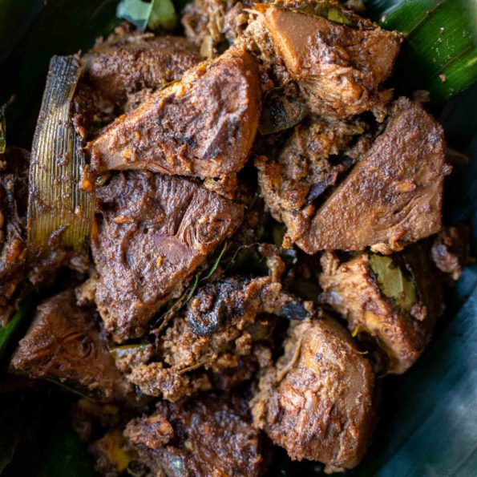

Slow-Cooked Young Jackfruit Curry

Description
Slow-cooked young jackfruit curry aka Sri Lankan Polos curry is
one of my all-time favorite curries. Both as a kid and as an adult
. This is one of the best meat alternatives you’d ever find.
Polos or young jack fruit is highly popular in Sri Lanka and you
can find them almost anywhere in the country. We pick jackfruit
from our own backyard. If you look for any Jack fruit recipes, go
for a Sri Lankan one. Trust me, Sri Lankans are experts in making
various dishes with them. We have jack fruit dishes dedicated for
all of its growing stages. For example, This polos curry and
polos cutlets when they are very young. Polos Mallung when they
are a little matured but not quite enough (Mallung is a lightly
cooked salad with grated coconut and some aromatics, spices, and
chilis). And then famous Sri Lankan Kiri kos curry when they’re
fully matured but not ripened. Well, ripened jack fruit doesn’t
need any cooking. It’s an amazing sweet treat on its own.
Ingredients
-
1 can of young jackfruit (1 can = 20 oz net w./10oz drained
w.)
- 1/4 cup finely chopped onion or shallots
- 5 garlic cloves finely chopped
- 1 sprig of curry leaves*
- 1 small pandan leaf broken into 3inch pieces
- 1 tbsp broken fresh coconut slices (optional)
- 1 tsp Maldive fish flakes/umbalakada (optional)
- 1 piece of Garcinia cambogia/goraka*
- 1 piece of ceylon cinnamon (roughly about 3 inches)
- 1 tbsp Sri Lankan unroasted curry powder
- 2 tsp chili powder (adjust to your spice level)
- 2 tsp coconut oil
- 1 cup thick coconut milk (I use canned)
- salt to your taste
- 1/2 cup grated coconut (fresh or frozen)
Steps
-
Turn on the saute function in your instant pot/multicooker.
Add coconut oil. Also add Sri Lankan unroasted curry powder,
chili powder, and about 1/2 tsp of salt. Toast the spices in
oil for about 10 seconds until they become fragrant and a
little darker in color.
-
If the spices start to stick to the bottom, turn off the
instant pot. The residual heat is enough for the rest of the
ingredients. Add curry leaves, pandan leaves, garlic, ginger
, onion, Goraka/Garcinia, cinnamon, coconut slices, Maldive
fish flakes and saute until onions become soft.
-
Then add your young jackfruit pieces. Mix well with the
spices.
-
Add coconut milk*. Taste the curry and add salt if it needs
any. (I add about 1/4 tsp salt, totaling roughly about 3/4
tsp salt for one can of young jackfruit).
- Seal the pot. Slow-cook for 12 hours on low temp.
-
While the curry is cooking, dry roast the grated coconut in a
pan until they become dark brown.
-
In a mortar and pestle or in a spice grinder or blender,
grind the roasted coconut until they become a rough powder.
-
When the time is up, turn off and quick release if you're
using an instant pot. This is how the curry looks like after
being slow-cooked for 12 hours on low.
-
Add toasted coconut to the curry. Mix gently without breaking
the pieces.
-
Turn on the slow cooker mode again and set the temp to low.
Cook the curry uncovered with the lid for about 20 - 30 mins
more. Until the curry gets thicker. Make sure to gently move
the pieces from time to time with a spatula. This would stop
the bottom of the jackfruit pieces from roasting or sticking
to the pot. Optional step: add a few broken curry leaves for
the aroma.
-
Turn off the instant pot when you get the desired thickness
of the curry. The curry would be even thicker as it cools
down. This curry can last about 5 days in the fridge.